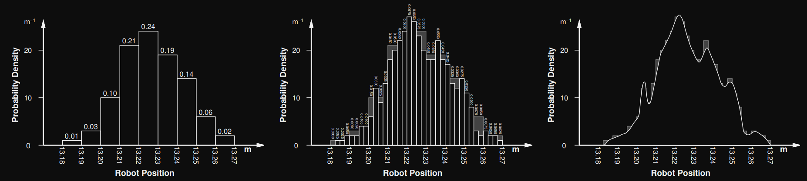
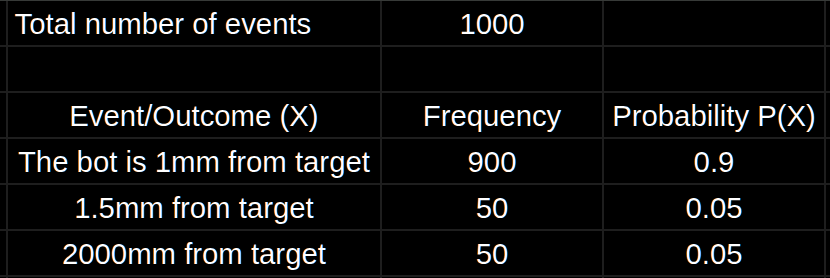

Consider running a test to see if a bot comes to a stop at exactly the right point, a 1000 times. At the end of each test, the bot's position is measured w.r.t. the target.
| Term | Definition |
|---|---|
| Event or outcome | Something that could happen |
| Sample space | List of events |
| Discrete sample space | Discrete set of events or possible outcomes |
| Probability | |
| Normalised PD | A PD in which all the probabilities sum to 1 |
| Probability of 0 | The event is guaranteed to not happen |
| Probability of 1 | The event is certain to happen |
| Conditional probability | The probability of some event given that some other event already occurred. PMF is used to find this. |
| $p(x)$ | The probability of a vehicle being in position $x$. |
| $p(x,y)$ |
The probability of a vehicle being in position x |
| $p(y|x)$ |
The probability of |